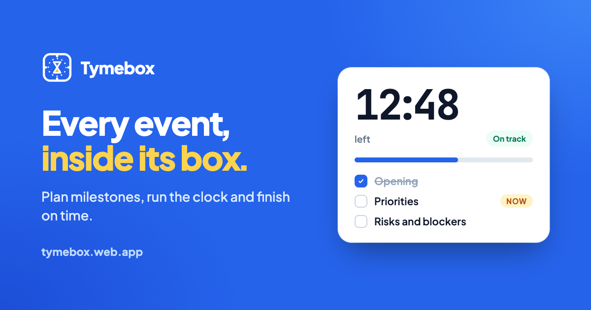
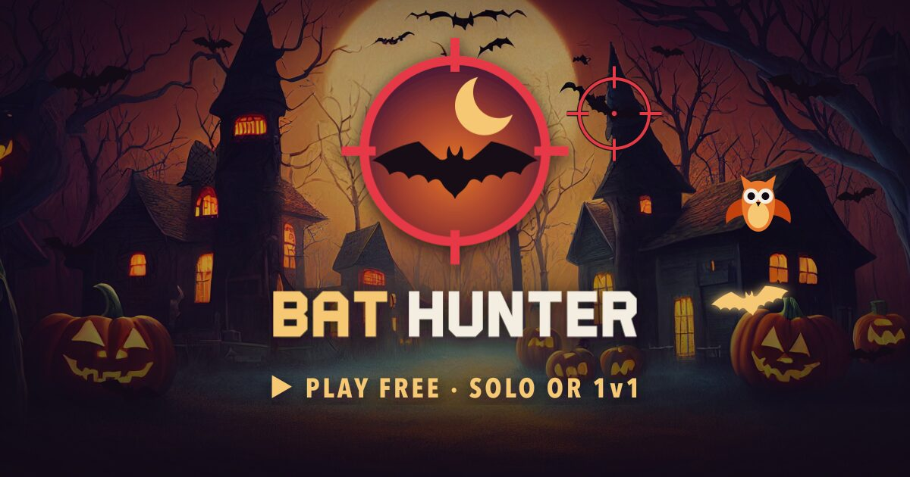
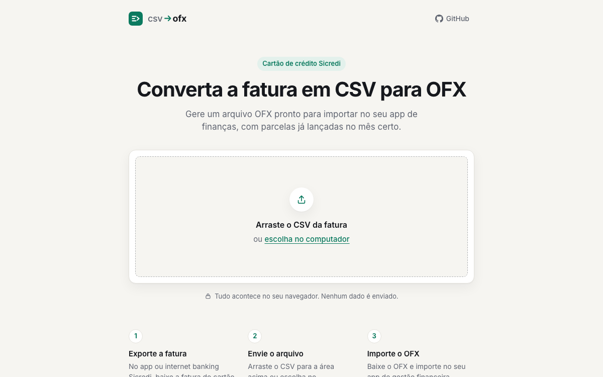
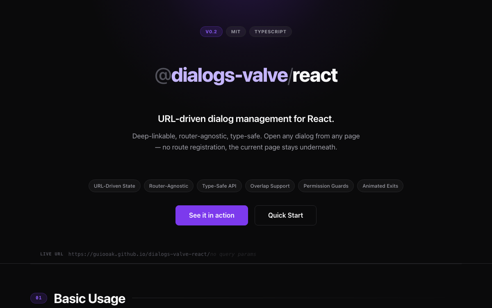

Things I've built
Built to solve a problem of my own, or not. But always for fun. All free to use, with the code on GitHub.

Tymebox
Every event, inside its box.
Puts meetings and events in time boxes: plan the milestones, run the countdown, finish on time and then see exactly how it went.
- The countdown compares your pace with the plan and warns you when you fall behind
- Ready-made templates for planning, retros and 1:1s
- A report at the end to send to everyone who was there

Bat Hunter
Too many bats. Time to drop some.
A browser shooting game born in a hackathon: the night sky is full of bats and your job is to drop as many as you can, with the best aim you can.
- Free play, a 60-second challenge and 1v1 matches with chat
- On Hard: golden bats are worth 10, and the owl costs you points
- Works on desktop and phone

csv→ofx
Your Sicredi bill, ready for your finance app.
Turns the CSV of a Sicredi credit card bill into an OFX file, ready to import into your personal finance app. The app itself is in Portuguese, for Brazilian users.
- Puts each installment in the right month
- Shows a summary of the bill before the download
- Runs in the browser: no data leaves your computer

Dialogs Valve
Modals and drawers driven by the URL.
An open source React library that keeps the state of modals and drawers in the URL, so deep links, the back button and shareable URLs just work.
- Works with any router: Next.js, React Router, TanStack…
- Stacked dialogs, with permission guards
- Strictly typed with TypeScript, published on npm